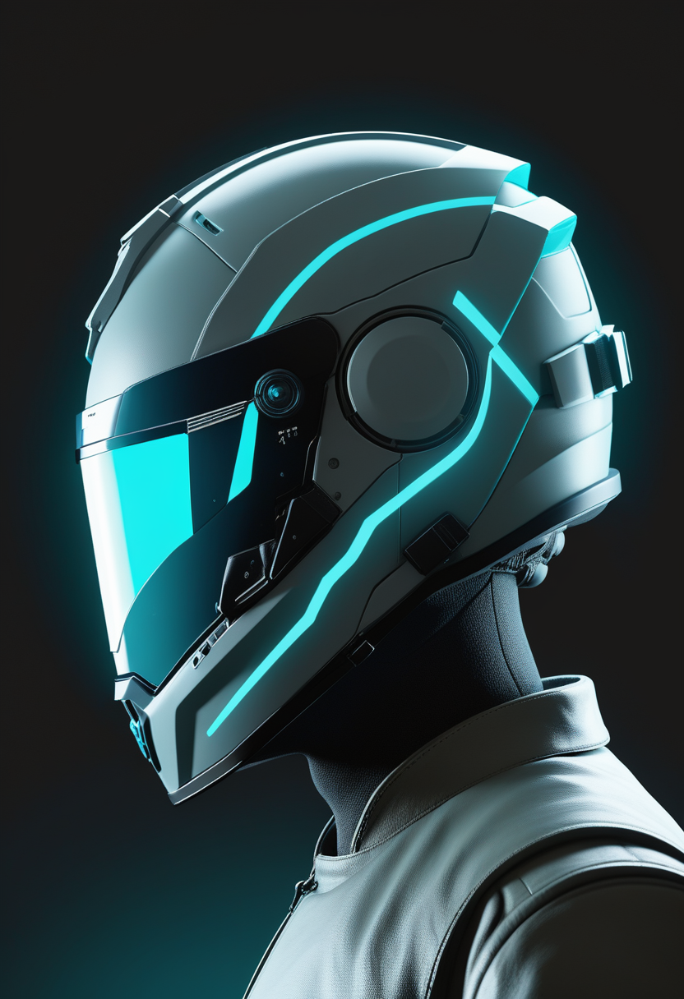
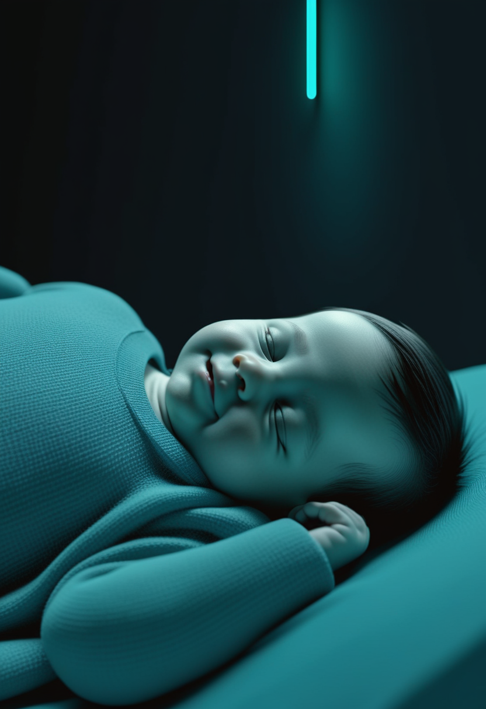
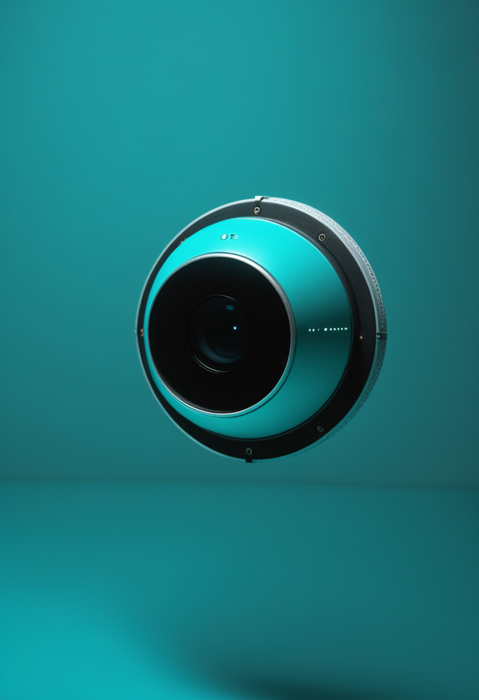
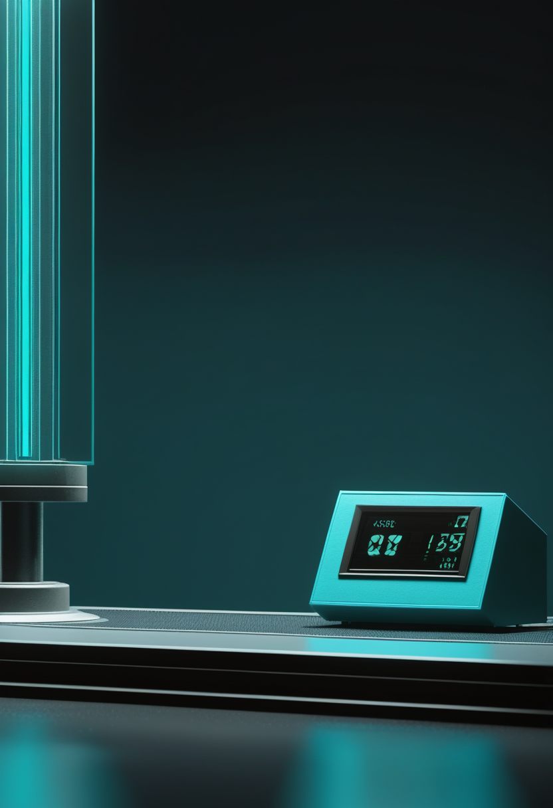
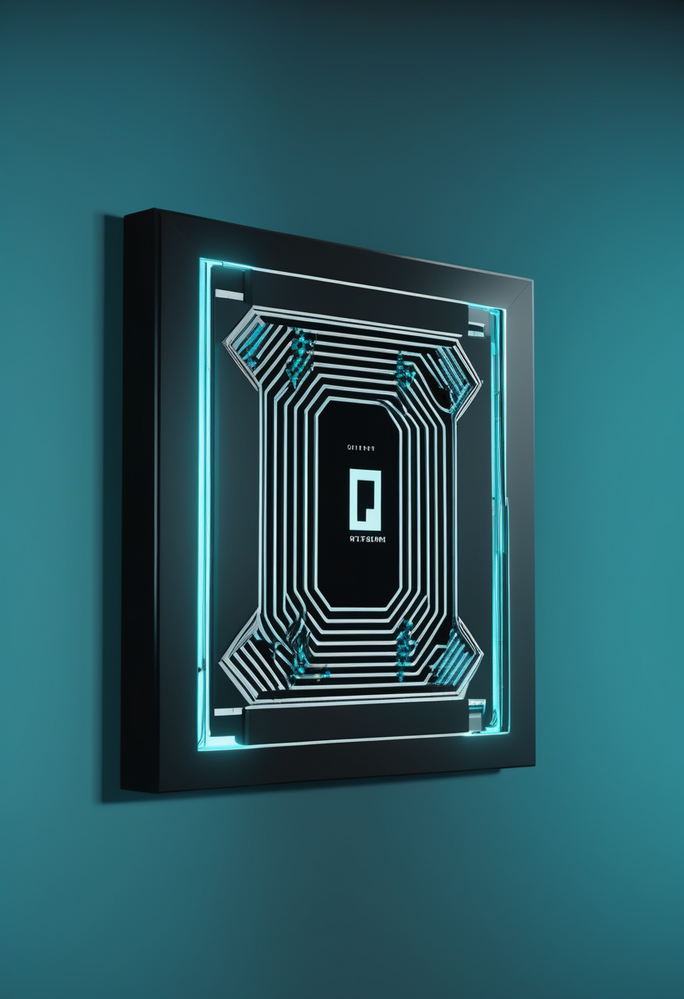
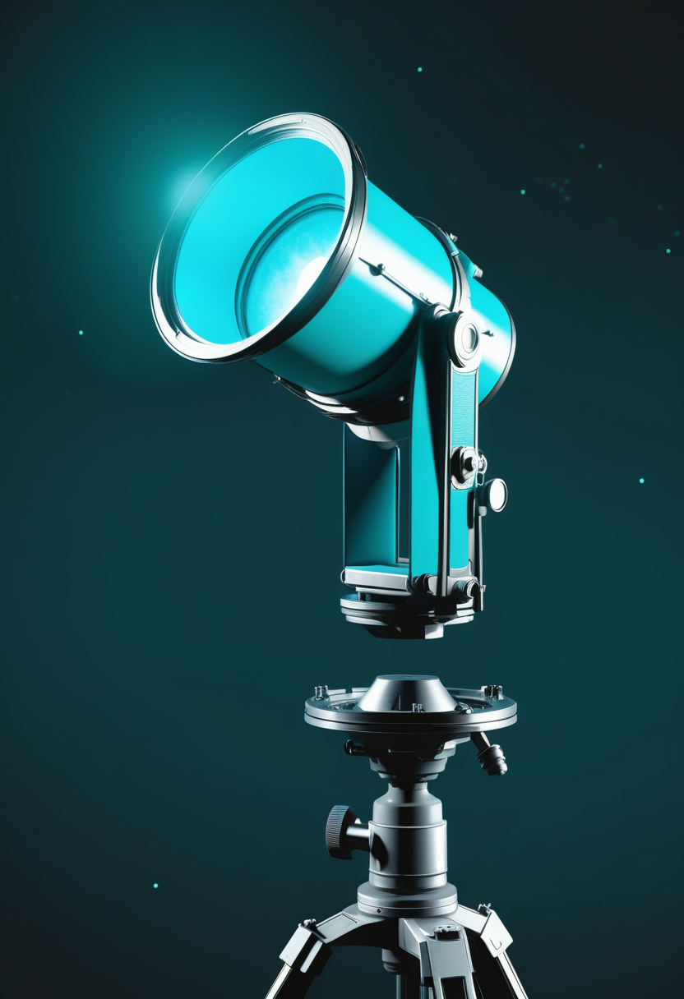
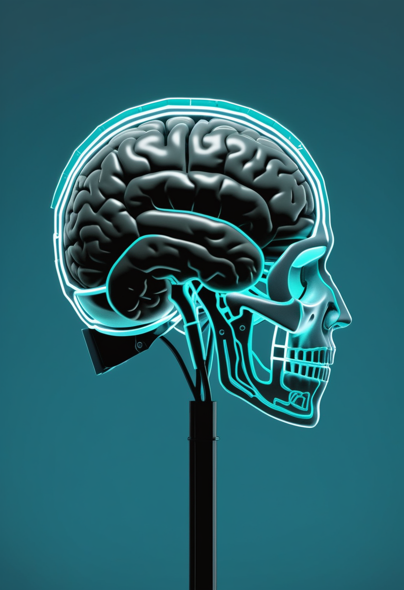

月曜日の便り。Meta AIは非侵襲(MEG)脳信号からタイピング内容を再構成する「Brain2Qwerty v2」を発表し、平均単語正解率61%(最高78%)を達成した ― 手術・埋め込みを一切伴わない入力経路が着実に精度を上げている。同じ自由の章では、Tobiiが専用ハードウェア不要のウェブカメラ視線トラッカーを研究者向けに投入し、視線データ収集の裾野拡大を図る。命の現場では、フロリダで開催されたCure SMA年次会議が症候発現前治療の長期データと新生児スクリーニング拡充の議論を報告した。基盤/公衆衛生では、米国の麻疹拡大とイスラエルの大規模流行がともに接種率低下という共通要因で分析され、H5N1のヒト感染は世界累計1,022例に到達した。なお、DRCのエボラは8/3時点で新たなWHO集計更新は確認できておらず(要確認)、7/30時点の計3,626例・死者1,587人が最新値のままとなっている。畏敬の章では、米HRL研究所が外部制御装置に頼らず自律動作するシリコン量子プロセッサをNatureに発表し、NASAは極紫外線宇宙望遠鏡「Aspera」の8/15打ち上げを予定する。そして美の章では、全脳エミュレーションに「競合」回路統合が鍵と判明した研究、AI意識の多次元モデルを巡る議論、心臓デジタルツインのUK Biobank規模パイプラインが並び、人間のデジタル化は臓器単位からの「積み上げ型」で着実に前進している。

Meta AIは6/29、頭部装着型MEG(脳磁図)ヘルメットのみでタイピング内容を再構成する非侵襲システム「Brain2Qwerty v2」を発表した。9人の被験者・約22,000文の学習データにより平均単語正解率61%(従来の非侵襲手法は8%)を達成、手術・埋め込みを一切伴わずに文字入力を再現できることを示した。最高被験者の正解率は78%に達し、訓練パイプラインはオープンソース化されている。血管内(Synchron)・脳表面(Precision Neuroscience)・侵襲型高密度(Neuralink)という埋め込み型BCIが臨床実装に近づく一方、非侵襲・低コストの入力経路も着実に精度を上げつつある。

7月末にフロリダ州オーランドで開催されたCure SMA年次会議(Annual SMA Conference)では、新生児スクリーニングで発見され症候発現前に遺伝子治療を開始した患者の長期追跡データが複数報告され、座位・歩行など年齢相応の運動発達を達成し人工呼吸器・経管栄養を要さないケースが多いことが改めて共有された。あわせて新生児・出生前スクリーニングの普及に伴う診断数増加への対応も議題に上った。一方、筋肉増強を狙う抗ミオスタチン抗体emugrobart(Roche/中外)はSMA・FSHD双方で有効性が確認できず、3月に開発中止が発表されている。
SMA治療は「早期発見(新生児スクリーニング)→早期介入」の効果が長期データで裏付けられる一方、新薬開発は成功と失敗が明確に分かれ、既存アプローチの最適化フェーズに入っている。
Meta AIは6/29、頭部装着型MEG(脳磁図)ヘルメットで計測した脳信号からタイピング内容を再構成する非侵襲システム「Brain2Qwerty v2」を発表した。9人の被験者・約22,000文からの学習データにより平均単語正解率61%(語誤り率39%)を達成、従来の非侵襲手法(正解率8%)から大幅に向上した。最高被験者は78%の正解率で、手術・埋め込みを一切伴わない点が特徴。訓練パイプラインはオープンソース化された。

Tobiiは2026年6月、専用ハードウェア不要で一般的なウェブカメラを視線トラッカーとして利用できる「Webcam eye tracking for research」を発売した。遠隔・分散型の研究参加者からもデータ収集を可能にし、視線データの母集団の多様化を狙う。オンライン版がまず提供され、対面調査向けのローカル版は2026年内に追加予定。
非侵襲(Meta)・低コスト(Tobii)という2つの異なるアプローチが、専用機器やインプラントへの依存を減らす方向で同時に進展した。視線・脳信号という入力経路の裾野が広がりつつある。
米国では2026年に入り麻疹症例が約2,300例に達し、2000年に達成した「排除国」認定の維持が危ぶまれる水準に近づいている。CDC専門誌(Emerging Infectious Diseases)は、イスラエルで2025年4月〜2026年2月に発生した大規模流行(3,203例・死者16人、患者の82.7%が未接種)の疫学・ゲノム解析を報告し、両国とも接種率低下が流行拡大の主因と分析している。

CDCの最新まとめ(2026-06-26公表、6/10時点データ)によれば、1997年以降のH5N1ヒト感染確定例は世界累計1,022例。2025年8月〜2026年6月の間にバングラデシュ・カンボジア・インドの3カ国から新たに12例(うち死亡3例)が報告された。米国内では2024年〜2026年5月までに71例が確認されたが、ヒト-ヒト感染は確認されておらず、CDCは一般公衆へのリスクを引き続き「低い」と評価している。
麻疹・H5N1という「予防可能な感染症」のワクチン接種率低下という共通の脆弱性が、米国・イスラエル・南アジアなど世界各地で顕在化している。DRCエボラは8/3時点で新たなWHO更新は確認できておらず(要確認)、7/30時点の集計(計3,626例・死者1,587人)が最新値のままとなっている。

米HRL Laboratoriesは、極低温(4K)環境下でチップ自体に制御回路を内蔵した18量子ビットのシリコンスピン量子プロセッサ(QPU)を開発し、外部の大型制御装置に頼らずエラー訂正ルーチンを自律実行できることをNature誌に発表した(2026年7月29日付)。市販ファウンドリで製造可能な設計であり、量子コンピュータの小型化・スケーラビリティ向上に向けた一歩と位置付けられている。

NASAの小型天文衛星「Aspera」が8/15、Rocket Lab社のElectronロケットによりニュージーランド・マヒア射場から打ち上げられる予定。近傍銀河の円盤周辺・銀河間物質中の高温ガスが放つ極紫外線(EUV)を観測し、銀河の質量降着・放出メカニズムの解明を目指す。
地上ではHRLの量子プロセッサが「制御回路の内蔵化」という実装面のブレークスルーを示し、宇宙では小型衛星Asperaが銀河間物質という見えざるガスへ望遠鏡を向ける準備を進める ― スケールの異なる2つの「自律化」「小型化」の動きが並んだ。

2026年4月の報告によれば、非侵襲脳活動記録を用いた研究で、脳回路間の協調的相互作用だけでなく競合的相互作用も組み込んだモデルの方が、協調のみのモデルより一貫して優れた全脳シミュレーション精度を示すことが分かった。専門家は依然として真の全脳エミュレーション(マインドアップロード)の実現は最短でも30〜40年先とみており、「10年以内のデジタル不死」を謳う主張は誤りか誇張だと警告している。
英サセックス大学は7/1-2、AISB2026の一部として「AI Consciousness and Ethics」ワークショップを開催し、AIが道徳的権利を持つ主体(moral receiver)か義務を負う主体(moral doer)かを巡る議論を交わした。関連論文は意識を単一の閾値ではなく複数の半独立した次元の集合として捉える枠組みを提案しており、AIの能力向上に理論的枠組みの整備が追いついていない現状への危機感を反映している。
心臓MRIから患者個別の心室メッシュモデルを自動生成するオープンソースパイプラインが、UK Biobank参加者約55,000人分のデータに適用され、人口統計別の代表的モデル1,423体が構築された。臨床応用として治療戦略を仮想患者上でシミュレーションしてから実施する用途が期待されており、心臓・腫瘍領域を中心にデジタルツインの大規模実装が進んでいる。
「個人まるごとのデジタル化」はなお数十年単位で遠い一方、心臓など特定臓器のデジタルツインは患者数万人規模での実用段階に入りつつあり、人間のデジタル化は臓器単位からの「積み上げ型」で先行している。AI意識論も思弁から実証・制度化の両面で前進が続く。
2026年8月3日、Meta AIの非侵襲脳信号タイピング「Brain2Qwerty v2」は正解率61%を達成し、手術・埋め込みを伴わない入力経路が着実に精度を上げていることを示した。同じ自由の章ではTobiiがウェブカメラだけで使える視線トラッカーを研究者向けに投入し、視線データ収集の裾野が広がっている。命の現場では、Cure SMA年次会議が新生児スクリーニングによる早期発見・早期介入の長期的な効果を改めて確認した。基盤/公衆衛生では、米国とイスラエルの麻疹流行がともにワクチン接種率低下という共通の脆弱性で分析され、H5N1のヒト感染は世界累計1,022例に達した ― DRCのエボラは8/3時点で新たな更新は確認できておらず、7/30時点の記録的な水準(計3,626例・死者1,587人)が最新値のままとなっている。畏敬の章では、米HRLの自律動作する量子プロセッサとNASAの極紫外線宇宙望遠鏡「Aspera」が、地上と宇宙それぞれで「自律化」「小型化」を進めていた。そして美の章では、全脳エミュレーションの新知見、AI意識を巡る多次元モデルの議論、心臓デジタルツインの大規模実装が、人間のデジタル化を臓器単位から着実に積み上げていた。
では、また明日の朝に。 — JaH